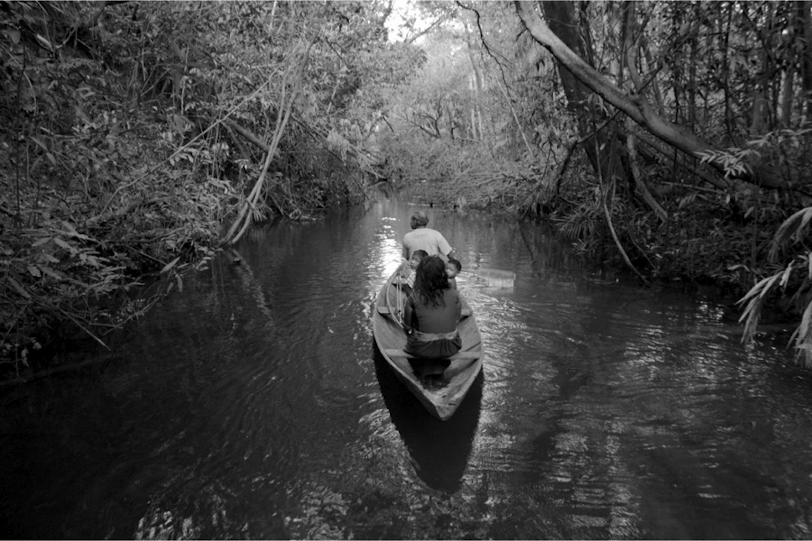
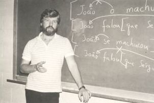

Daniel Everett은 1977년부터 아마존의 피라항(Pirahã) 부족과 함께 살았습니다. 그가 발견한 언어는 충격적이었습니다 — 숫자도, 색깔 어휘도, 시제도, 종속절도 없습니다. 모든 말이 “지금 여기 보이는 것”에 매여 있습니다.
Chomsky의 보편 문법은 모든 언어에 재귀가 있다고 봅니다 — 문장 안에 문장을 넣는 능력. 그런데 피라항어에는 그것이 없어 보였습니다. 학계가 한바탕 흔들렸습니다.